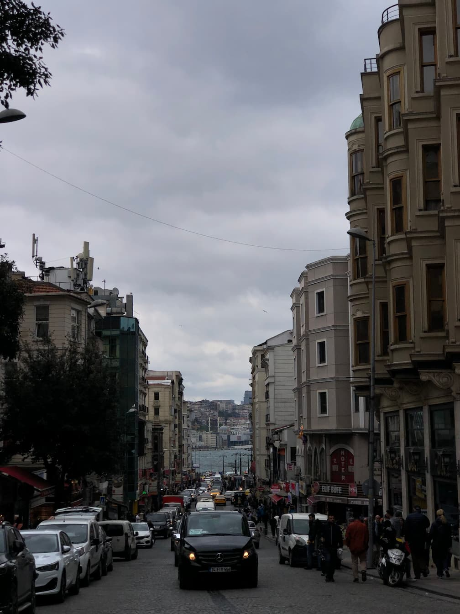
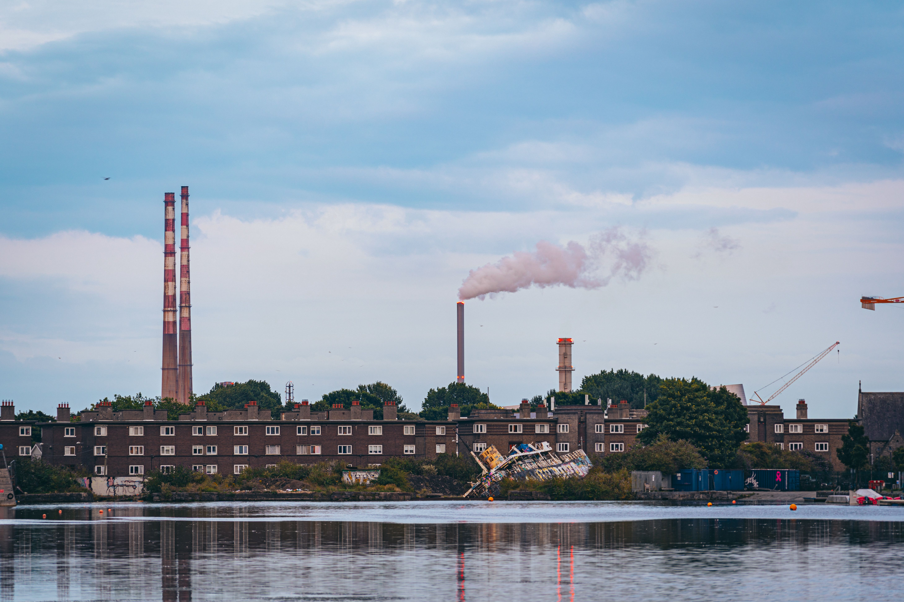
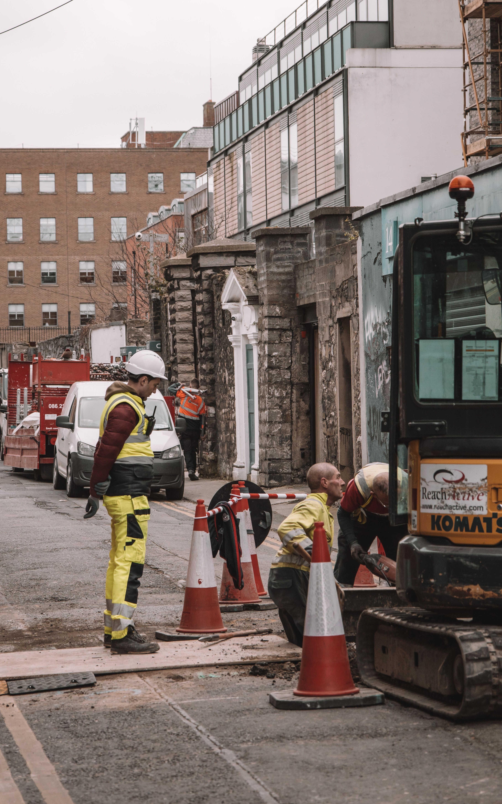

Causes of air pollution in Dublin
Air pollution in Dublin is caused by a mix of human activity and cities condtions. As a busy capital city, Dublin has a large number of cars, buses, delivery vehicles, and other traffic moving through it every day.

One of the main causes of poor air quality is transport emissions. Cars and other road vehicles release pollutants into the air, especially in busy areas with a lot of traffic and congestion.
Another important cause is the burning of solid fuels such as coal, peat, and wood for home heating. This can release fine particles into the air, which can reduce air quality and create more problems during colder months.

Industrial emissions are another source of air pollution in Dublin. Factories and other industrial sites can release pollutants into the air, which can affect the surrounding areas.

Construction work and general urban activity can also add to pollution levels. Dust, machinery, and emissions from different sources can all make the air less clean in built-up parts of the city.